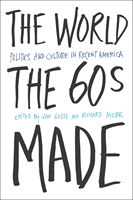

A bold reinterpretation of the Sixties' legacy
A bold reinterpretation of the Sixties' legacy


 A bold reinterpretation of the Sixties' legacy
A bold reinterpretation of the Sixties' legacy

|  |
The World the Sixties MadePolitics and Culture in Recent Americaedited by Van Gosse and Richard Moserpaper EAN: 978-1-59213-201-0 (ISBN: 1-59213-201-4) |
"An important volume, The World The Sixties Made fills a large niche in post-1968 historical scholarship. Gosse's introductory essay is excellent, compelling, and well argued. Moser's introduction is a key piece and a timely historical document. This will be a significant and influential book."
—Brad Martin, History and Social Sciences Department, Bryant College
How can we make sense of the fact that after decades of right-wing political mobilizing the major social changes wrought by the Sixties are more than ever part of American life? The World the Sixties Made, the first academic collection to treat the last quarter of the twentieth century as a distinct period of U.S. history, rebuts popular accounts that emphasize a conservative ascendancy.
The essays in this volume survey a vast historical terrain to tease out the meaning of the not-so-long ago. They trace the ways in which recent U.S. culture and politics continue to be shaped by the legacy of the New Left's social movements, from feminism to gay liberation to black power. Together these essays demonstrate that the America that emerged in the 1970s was a nation profoundly, even radically democratized.
Excerpt available at www.temple.edu/tempress
"The continued relevance of the left of the 1960s is a major challenge to almost any contemporary understanding of that tumultuous decade. This is a very inventive contribution, arguing that the left remains far more important than often claimed. There is a lot of new and intriguing research here. It's a book well worth reading."
—Ken Cmiel, University of Iowa
"In this historical moment, when the forces of reason seem so strong, The World the Sixties Made reminds us just how much the radical movements of the 1960s and 1970s accomplished—and that the future is not closed."
—James William Gibson, author of The Perfect War: Technowar in Vietnam and Warrior Dreams: Paramilitary Culture in Post-Vietnam America
"[T]he essays do a fine job of balancing the broad historical narrative with the detailed studies of disparate subjects.... It marks a provocative starting point of the historiography of recent America [and] provide a basis for contentious debate."
—The Register of the Kentucky Historical Society
Introduction I: Postmodern America: A New Democratic Order in the Second Gilded Age – Van Gosse
Introduction II: Was It the End or Just a Beginning? American Storytelling Traditions and the 1960s – Richard Moser
1. Beyond Declension: Feminist Radicalism in the 1970s and 1980s – Sara M. Evans
2. The Land Belongs to the People: Reframing Urban Protest in Post-Sixties Philadelphia – Andrew Feffer
3. Unpacking the Vietnam Syndrome: The Coup in Chile and the Rise of Popular Anti-Interventionism – Van Gosse
4. The Movement Inside: BBS Films and the Cultural Left in the New Hollywood – Andrew Schroeder
5. In the Name of Austerity: Middle-Class Consumption and the OPEC Oil Embargo of 1973-1974 – Natasha Zaretsky
6. Taking Over Domestic Space: The Battered Women's Movement and Public Protest – Anne Enke
7. Fabulous Politics: Gay, Lesbian, and Queer Movements, 1969-1999 – Jeffrey Escoffier
8. A Very American Epidemic: Memory Politics and Identity Politics in the Names Project AIDS Memorial Quilt, 1985-1993 – Christopher Capozzola
9. Holding the Rock: The "Indianization" of Alcatraz Island, 1969-1999 – Carolyn Strange and Tina Loo
10. Out of Labor's Dark Age: Sexual Politics Comes to the Workplace – Kitty Krupat
11. Auto Workers at Lordstown: Workplace Democracy and American Citizenship – Richard Moser
12. Cartoon Politics: The Case of the Purloined Parents – James Livingston
13. At the End of the Century (poem) – Eliot Katz
About the Contributors
Van Gosse is Assistant Professor of History at Franklin and Marshall College; he is the author of Where the Boys Are: Cuba, Cold War America and the Making of a New Left.
Richard Moser is a National Field Representative of the American Association of University Professors and the author of The New Winter Soldiers: GI and Veteran Dissent During the Vietnam Era.
Contributors: Christopher Capozzola, Anne Enke, Jeffrey Escoffier, Sara Evans, Andrew Feffer, Eliot Katz, Kitty Krupat, James Livingston, Tina Loo and Carolyn Strange, Andrew Schroeder, Natasha Zaretsky, and the editors.
Critical Perspectives on the Past, edited by Susan Porter Benson, Stephen Brier, and Roy Rosenzweig.
Critical Perspectives on the Past, edited by Susan Porter Benson, Stephen Brier, and Roy Rosenzweig, is concerned with the traditional and nontraditional ways in which historical ideas are formed. In its attentiveness to issues of race, class, and gender and to the role of human agency in shaping events, the series is as critical of traditional historical method as content. Emphasizing that history is itself an interpretation of material events, the series demonstrates that the historian's choices of subject, narrative technique, and documentation are politically as well as intellectually constructed.
© 2015 Temple University. All Rights Reserved. This page: http://www.temple.edu/tempress/titles/1655_reg.html.